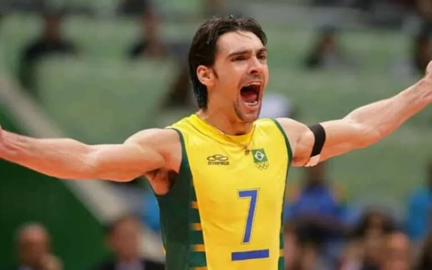
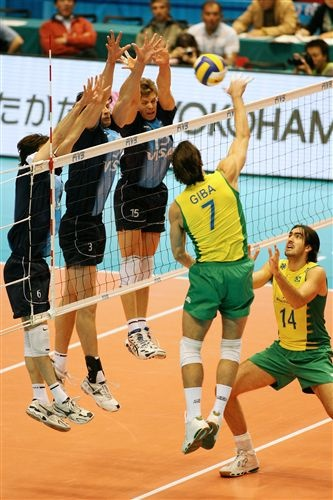

1. Uma Lenda Forjada na Superação

Gilberto Amauri de Godoy Filho não é o maior apenas por seus troféus, mas por sua trajetória[cite: 2]. O que muitos não sabem é que a vida de Giba começou com grandes desafios[cite: 2]:
- Aos 6 meses de vida, sobreviveu à leucemia[cite: 2].
- Aos 10 anos, caiu de uma árvore e levou 150 pontos no braço esquerdo, quase comprometendo seus movimentos[cite: 2].
- Desafiou a biologia: com apenas 1,92m de altura (considerado baixo para o vôlei de elite), ele precisou desenvolver uma técnica impecável[cite: 2].
"Eu sempre tive que pular mais alto e bater mais rápido do que os caras de 2,10m." - Giba[cite: 2]
2. A Física por trás de Giba
Como alguém de 1,92m domina jogadores muito mais altos[cite: 2]? O segredo era a velocidade do seu braço, sua impulsão que o fazia chegar a 3,25m de altura no ataque, e a capacidade de girar o tronco no ar para mudar a direção da bola no último milissegundo[cite: 2].

Assista à análise detalhada clicando no link abaixo[cite: 2]:
▶ Assistir Análise Técnica no YouTube3. Tabela de Desempenho (Seleção e Clubes)
No vôlei, os números de vitórias e a estante de troféus do Giba impressionam[cite: 2].
| Categoria[cite: 2] | Seleção Brasileira (1995–2012)[cite: 2] | Clubes e Geral[cite: 2] |
|---|---|---|
| Quantidade de Jogos[cite: 2] | 319 jogos oficiais[cite: 2] | Mais de 500 jogos oficiais[cite: 2] |
| Vitórias e Derrotas[cite: 2] | Era de Ouro: Quase 90% de vitórias (39 medalhas em 45 torneios)[cite: 2] | Alta taxa de vitórias em Ligas Nacionais (ex: Tricampeão Italiano)[cite: 2] |
| Pontos de Destaque em Finais[cite: 2] | 20 pontos na Final Olímpica de Atenas (2004)[cite: 2] | Decisivo no título inédito do Cuneo na Copa Itália (2006)[cite: 2] |
| Principais Conquistas[cite: 2] |
|
Campeão Brasileiro, Italiano, Russo e Europeu[cite: 2] |
| Prêmios Individuais[cite: 2] |
|
|
| Fontes: FIVB e registros históricos de clubes. Giba é um dos poucos atletas a ser MVP das 3 maiores competições do vôlei.[cite: 2] | ||